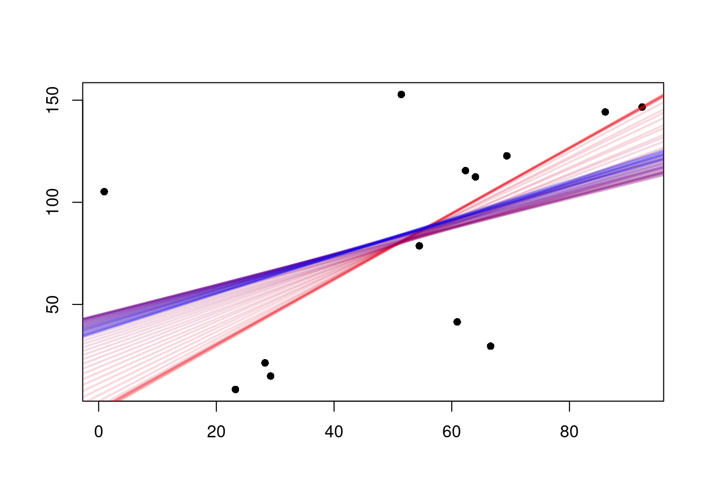
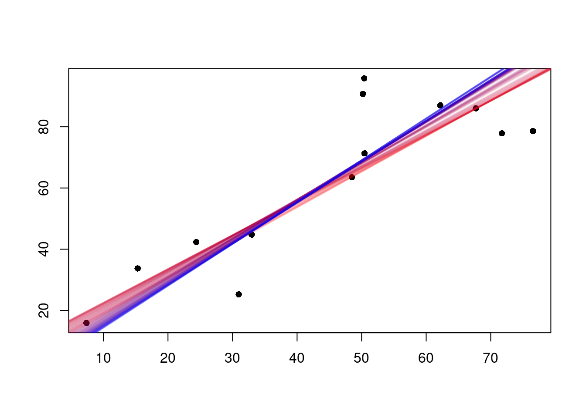
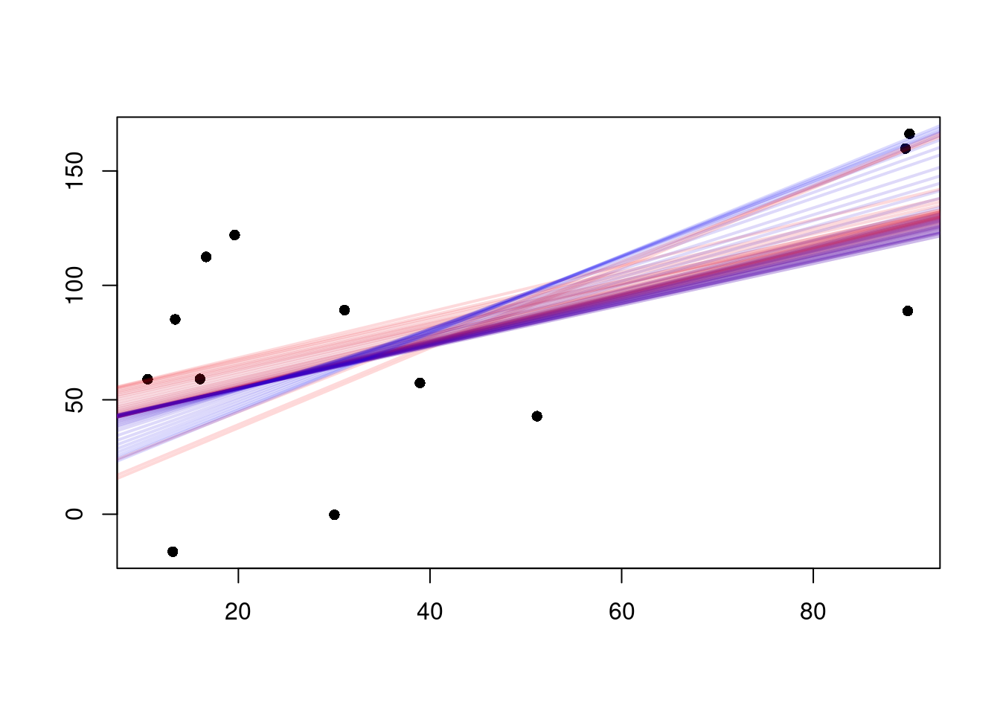
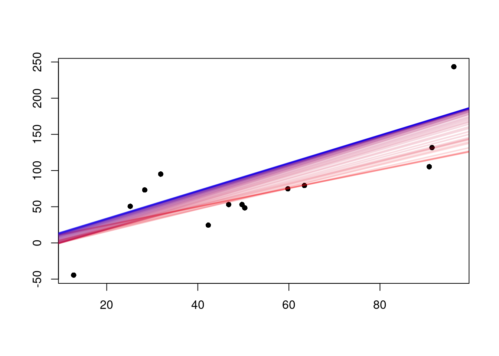
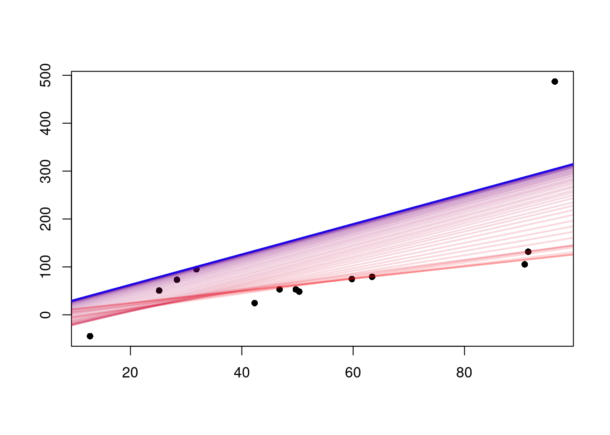
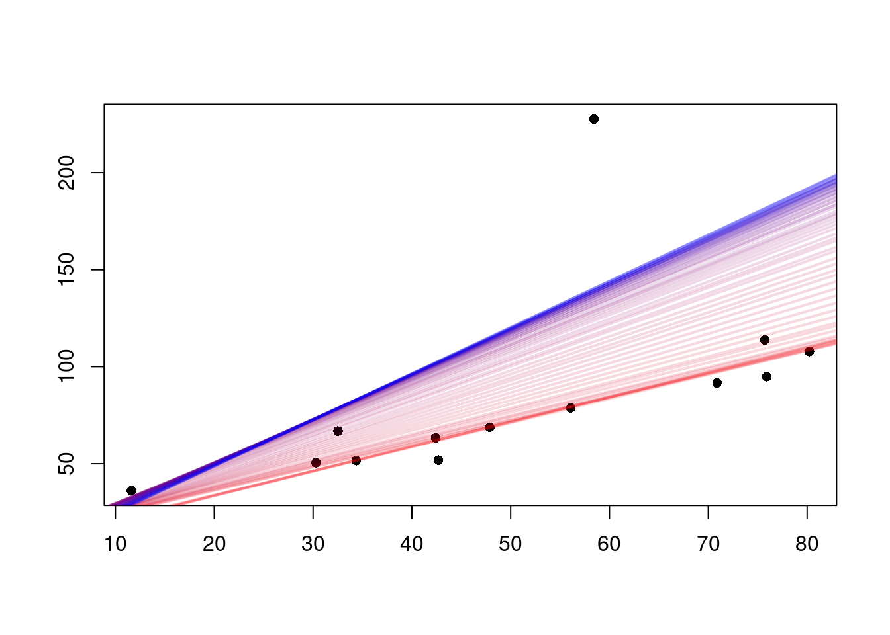
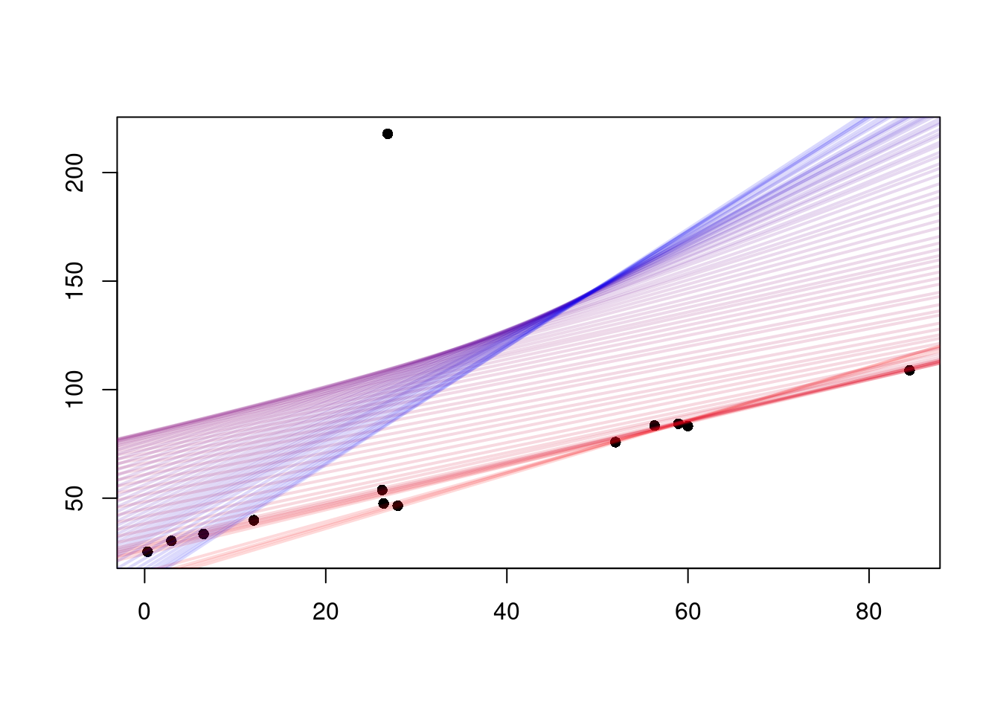
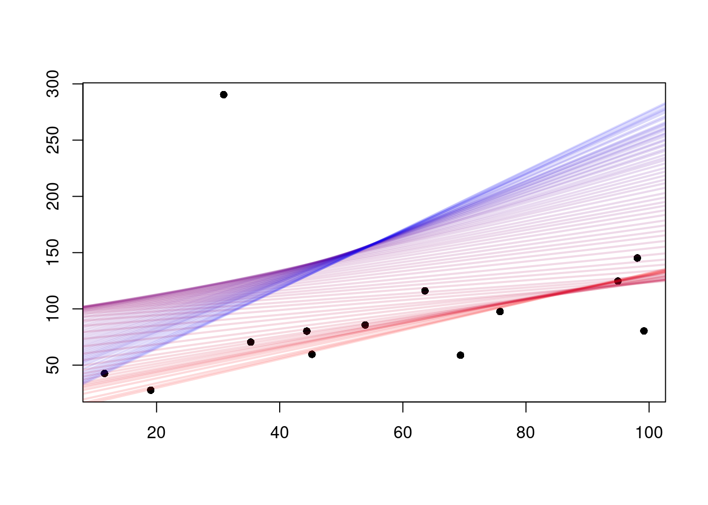

Por que minimizar a soma dos quadrados dos resíduos?
Se você acredita que uma certa variável \(\mathbf{y} = (y_1, y_2, \cdots, y_{n-1}, y_n )\) é gerada por
\[ y_i = \beta_0 + \beta_1 x_i + \varepsilon_i \quad , \quad \quad i = 1, 2, \cdots, n \]
E, a partir de \(n\) observações, você busca estimar \(\hat\beta_0\) e \(\hat\beta_1\), como você pode calcular esses coeficientes?
O leitor deve estar familiarizado com o método dos Mínimos Quadrados Ordinários (MQO), em que se encontra os coeficientes \(\hat \beta_0\) e \(\hat\beta_1\) da reta de regressão \(\hat y_i = \hat \beta_0 + \hat\beta_1 x_i\) minimizando a soma dos quadrados dos resíduos:
\[ \sum_{i = 1}^n \varepsilon_i^2 = \sum_{i = 1}^n (\beta_0 + \beta_1 x_i - y_i)^2 \]
Talvez você já tenha se questionado sobre o uso do “quadrado”. Por que não o valor absoluto? Por que não a décima potência? Se você já perguntou isso a um professor, talvez tenha recebido uma resposta relacionada com diferenciabilidade no ponto de mínimo1, mas isso é de pouca importância. Na verdade, a escolha por minimizar a soma dos quadrados dos resíduos não é arbitrária, e é melhor compreendida através da representação matricial do modelo:
\[ \mathbf{y} = \mathbf{X}\boldsymbol{\beta} + \boldsymbol{\varepsilon} \]
Onde
\[ \mathbf{y} = \left[\begin{array}{cccc} y_1 \\ y_2 \\ \vdots \\ y_n \\ \end{array}\right] ; \quad \quad \mathbf{X} = \left[\begin{array}{cccc} 1 & x_{11} & x_{12} & \cdots & x_{1k} \\ 1 & x_{21} & x_{22} & \cdots & x_{2k} \\ \vdots & \vdots & \vdots & \ddots & \vdots \\ 1 & x_{n1} & x_{n2} & \cdots & x_{nk} \end{array}\right] ; \quad \quad \boldsymbol{\beta} = \left[\begin{array}{cccc} \beta_0 \\ \beta_1 \\ \vdots \\ \beta_k \\ \end{array}\right] \]
E, analogamente:
\[ \boldsymbol{\varepsilon} = \left[\begin{array}{cccc} \varepsilon_1 \\ \varepsilon_2 \\ \vdots \\ \varepsilon_n \\ \end{array}\right] = \left[\begin{array}{cccc} \beta_0 + \beta_1 x_{11} + \beta_2 x_{12} + \cdots + \beta_k x_{1k} - y_1 \\ \beta_0 + \beta_1 x_{21} + \beta_2 x_{22} + \cdots + \beta_k x_{2k} - y_2 \\ \vdots \\ \beta_0 + \beta_1 x_{n1} + \beta_2 x_{n2} + \cdots + \beta_k x_{nk} - y_n \\ \end{array}\right] \]
Por esta perspectiva, o problema é encontrar \(\boldsymbol{\beta}\) que minimiza \(||\boldsymbol{\varepsilon}||_2 = ||\mathbf{y} - \mathbf{X}\boldsymbol{\beta}||_2\), onde a função
\[ \begin{aligned} ||\cdot||_p \quad : \quad \mathbb{R}^n &\rightarrow \mathbb{R} \\ \mathbf{x} &\mapsto \bigg(\sum^n_{i=1} x_i^p \bigg)^{\frac{1}{p}} \\ \end{aligned} \]
É a norma \(\ell^p\) de um vetor.
Para o caso da norma euclidiana (\(p = 2\)), o problema fica equivalente ao problema do método dos Mínimos Quadrados Ordinários, uma vez que:
\[ \mathop{\mathrm{argmin}}_{\boldsymbol{\beta}} ||\boldsymbol{\varepsilon}||_2 = \mathop{\mathrm{argmin}}_{\boldsymbol{\beta}} \sum_{i = 1}^n (\beta_0 + \beta_1 x_{i1} + \beta_2 x_{i2} + \cdots + \beta_k x_{ik} - y_i)^2 \]
Ou, no caso da regressão linear simples, em que \(k = 1\):
\[ \mathop{\mathrm{argmin}}_{\boldsymbol{\beta}}||\boldsymbol{\varepsilon}||_2 = \mathop{\mathrm{argmin}}_{(\beta_0, \beta_1)} \sum_{i = 1}^n (\beta_0 + \beta_1 x_i - y_i)^2 \]
Se isso não é suficiente para convencer que a escolha pela minimização da soma dos quadrados dos resíduos é especial, note que o teorema de Gauss-Markov mostra que o Melhor Estimador Linear Não Viesado (MELNV) é o estimador encontrado através do método dos mínimos quadrados ordinários. Além disso, sob a hipótese de que os erros são normalmente distribuídos, é possível mostrar que os estimadores encontrados por MQO e por Máxima Verossimilhança são equivalentes.
Minimizando a \(p\)-ésima potência do módulo dos resíduos
Tendo reconhecido a notabilidade do MQO, podemos explorar a classe de estimadores encontrados pela minimização da expressão
\[ S_p(\beta_0, \beta_1) = \sum_{i = 1}^n |\beta_0 + \beta_1 x_i - y_i |^p \quad, \quad \quad p \geq 1 \]
Note o uso do módulo, que é importante para garantir a convexidade de casos como \(p=3\).
É preciso descobrir como encontrar \(\beta_0\) e \(\beta_1\) para um valor de \(p\geq1\) qualquer. Infelizmente, as condições de primeira ordem não iluminam o problema, uma vez que as derivadas parciais da expressão acima não são fáceis de trabalhar:
\[ \begin{align} \frac{\partial}{\partial\beta_1} SR_p(\beta_0, \beta_1) &= \sum_{i = 1}^n px_i(\beta_1 x_i + \beta_0 - y_i)|\beta_1 x_i + \beta_0 - y_i|^{p-2} \\ \frac{\partial}{\partial\beta_0} SR_p(\beta_0, \beta_1) &= \sum_{i = 1}^n p(\beta_1 x_i + \beta_0 - y)|\beta_1 x_i + \beta_0 - y|^{p-2} \end{align} \]
Mais fácil que estudar as condições de primeira ordem é usar essas derivadas em um algoritmo de gradient descent.
Primeiro, defino a função gradient(), que pega um vetor \((\beta_1, \beta_0)\) e calcula seu gradiente.
gradient <- function(x, y, p, point) {
beta1 <- point[1]
beta0 <- point[2]
partialbeta1 <- sum(p*x*(beta0 - y + x*beta1)*abs(beta0 - y + x*beta1)^(p-2))
partialbeta0 <- sum(p*(beta1*x - y + beta0)*abs(x*beta1 - y + beta0)^(p-2))
return(c(partialbeta1, partialbeta0))
}Em seguida, é preciso definir o algoritmo iterativo. A baixa dimensão do problema nos permite usar um bastante simples: inicia-se no ponto \(\beta_1 = \beta_0 = 0\) e, a cada iteração, move-se uma distância de \(0.01\) unidades na direção contrária ao gradiente da função no ponto. A convexidade da função garante que não ficaremos presos em mínimos locais, pois todo mínimo local é também um mínimo global. Dessa forma, em dez mil passos estaremos bem perto do ponto de mínimo.
descent <- function(x, y, p) {
point <- c(0,0)
gradi <- c(10,10)
for (i in 1:10000) {
gradi <- gradient(x, y, p, point)
gamma <- 0.01
if (normv(gradi) < gamma) gamma <- gamma/1.5
point <- point - gamma*gradi/normv(gradi)
}
return(point)
}Em que normv() é uma função que calcula a norma euclidiana de um vetor.
Gerando alguns valores aleatórios para \(\mathbf{x}\) e \(\mathbf{y}\), podemos colocar um gráfico a posição da reta de regressão a cada valor de \(p\). Abaixo, vemos gráficos onde a reta mais vermelha apresenta \(p=1\), e a mais azul apresenta \(p=60\).

Os estimadores ficam mais diferentes na presença de outliers, isto é, valores de \(y_i\) muito distantes da média. Note que, quanto maior o valor de \(p\), maior é a tolerância por resíduos pequenos em prol de reduzir os maiores resíduos:

Em outras palavras, quanto maior \(p\), maior é o peso dado a resíduos grandes.
Animação é uma forma de visualização muito adequada para este contexto. A dimensão temporal representa a variação do valor de \(p\), que pode ser acompanhado no canto superior esquerdo de cada gráfico:


Note que a reta de regressão do caso \(p = 1\) sempre passa por cima de pelo menos duas observações.
Considere uma ordenação crescente em \(y\) das obervações, de forma que \((x_1, y_1)\) é a observação com menor valor de \(y\) e \((x_n, y_n)\) é a observação com maior valor de \(y\). Enquanto que a reta de regressão do caso \(p=2\) passa necessariamente por \(\bigg(\frac{\sum^n_{i=1} x_i}{n}, \frac{\sum^n_{i=1} y_i}{n}\bigg)\), a reta de regressão do caso limite \(p \rightarrow \infty\) passa necessariamente por \((\frac{x_n + x_1}{2}, \frac{y_n + y_1}{2})\). A demonstração desta propriedade fica como exercício para o leitor.
Claro, se deseja-se usar as condições de primeira ordem para encontrar os estimadores analiticamente, é importante que a função seja diferenciável no seu ponto de mínimo, além de que ela precisa, antes de tudo, possuir um ponto de mínimo global. Isso descarta a função módulo e as potências ímpares. Contudo, note que a \(p\)-ésima potência do módulo: \[|\varepsilon_i|^p, \quad \text{com } p \geq 2\] é tanto diferenciável no ponto de mínimo quanto convexa. Conclui-se que conveniência matemática não é uma justificativa apropriada para uma escolha tão consequente.↩︎